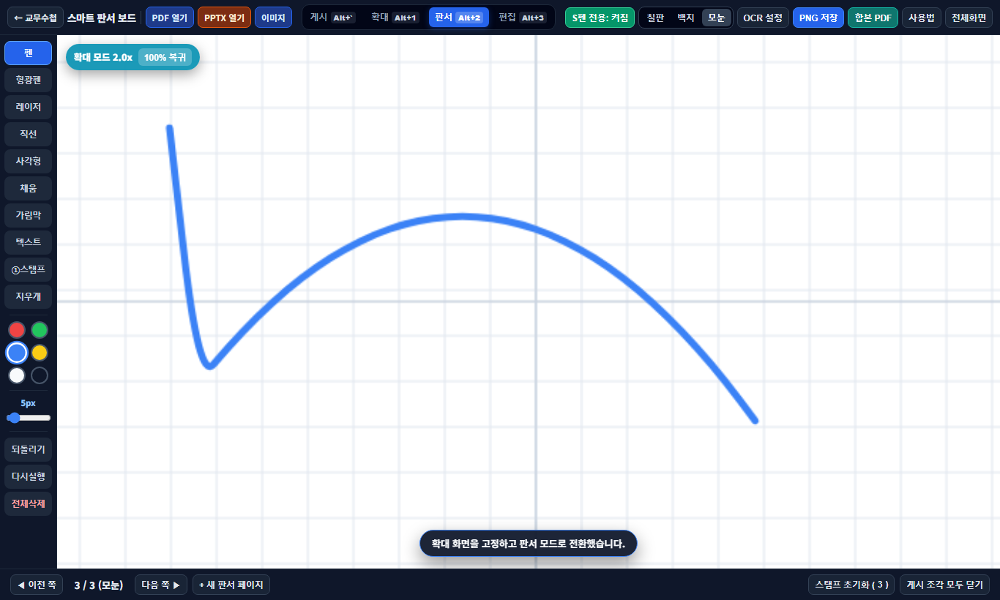
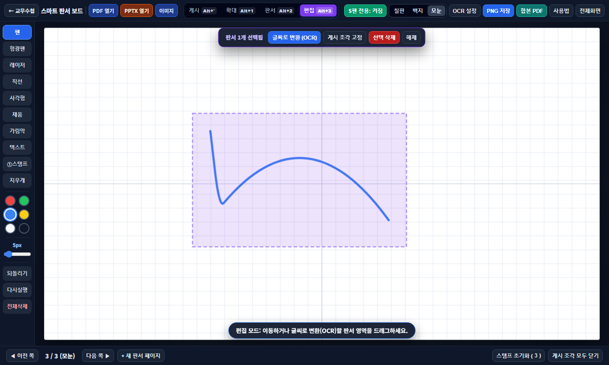

STEP 1PDF · PPTX(클릭 액션) · 이미지 · 배경 불러오기

- 상단
PDF 열기,PPTX 열기,이미지(또는Ctrl+V)로 수업 자료를 불러옵니다. - PPTX에 애니메이션이 있으면 하단
PPTX 클릭 액션버튼(또는Space/→)으로 숨겨진 공식·정답을 순서대로 공개합니다.
편집 모드(Alt+3)로 손글씨 영역을 감싸 [글씨로 변환 (OCR)]을 누르면 아래 선택한 무료 엔진으로 판서를 깔끔한 텍스트로 바꿉니다. API 키는 이 기기 브라우저에만 저장됩니다.
PDF 열기, PPTX 열기, 이미지(또는 Ctrl+V)로 수업 자료를 불러옵니다.PPTX 클릭 액션 버튼(또는 Space/→)으로 숨겨진 공식·정답을 순서대로 공개합니다.
펜·형광펜·레이저·직선(Shift)·사각형(Ctrl)·가림막·텍스트(T)·①스탬프(S)를 선택합니다.R/G/B/Y/I로 5색을 빠르게 전환합니다.
게시 선택 후 화면 영역을 드래그하면 떠 있는 조각으로 고정되며, 자동으로 판서 모드로 돌아옵니다.×로 삭제합니다.
확대(Alt+1) 상태에서 마우스 이동·휠(또는 두 손가락 핀치)로 배율을 맞추고 클릭하면 확대된 채로 바로 판서합니다.S펜 전용을 켜면 손바닥이 화면에 닿아도 선이 그어지지 않으며, S펜 옆 버튼을 누른 채 문지르면 지우개로 작동합니다.
편집에서 사각형으로 판서를 감싸면 안쪽을 드래그해 선택한 판서만 통째로 이동할 수 있습니다.글씨로 변환 (OCR)을 누르면 손글씨를 텍스트로 바꿔 판서 교체 · 복사 · 수업 메모보드 전송을 바로 실행합니다.
OCR 설정에서 Google Gemini 무료 API 키(한글 흘림체·수식 추천) 또는 OCR.space를 1회 설정합니다.PNG 저장(Ctrl+S)으로 현재 화면을, 합본 PDF로 전체 페이지 판서 합본을 다운로드합니다.